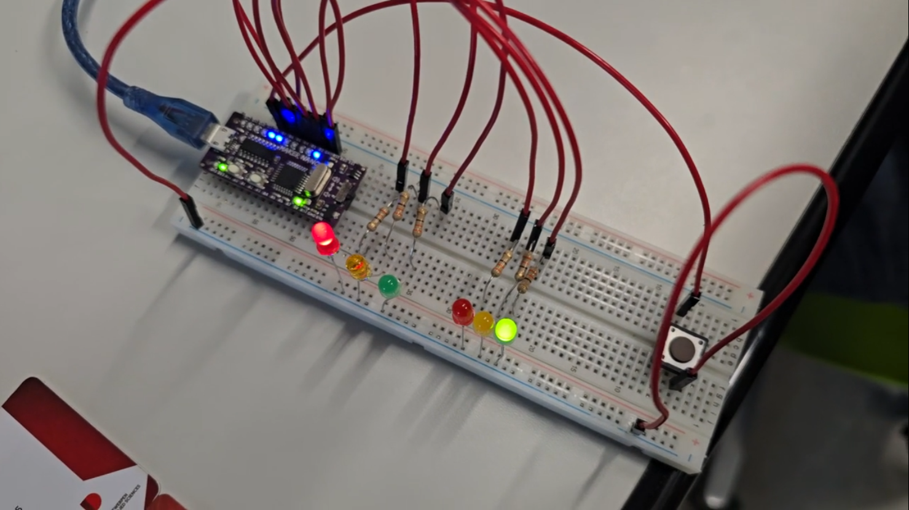

Mijn naam is Asman Ali, 24 jaar. Ik ben geboren in Burundi en opgegroeid in Kenia. Ik spreek vloeiend Nederlands, Engels en Frans. Momenteel volg ik de graduaatsopleiding Internet of Things (IoT) in Antwerpen aan AP Hogeschool. Welkom op mijn eerste webpagina, gemaakt met HTML en Bootstrap. In mijn vrije tijd lees ik graag, doe ik iets actief zoals lopen en hou ik mij bezig met kennis opdoen van nieuws in de ICT wereld.